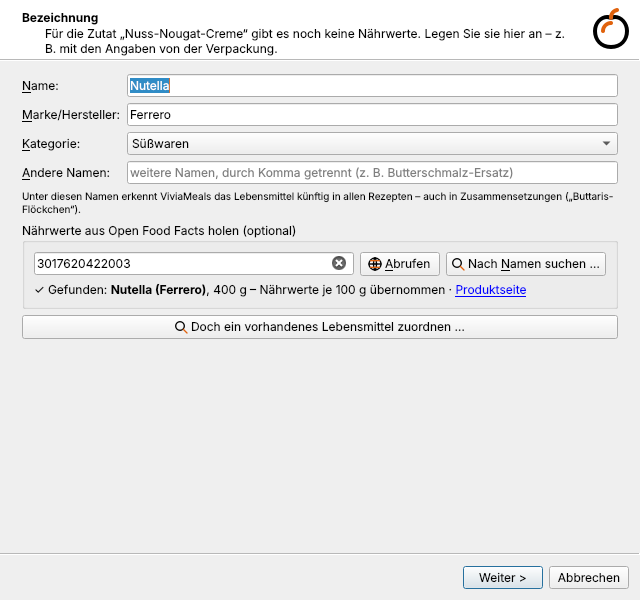
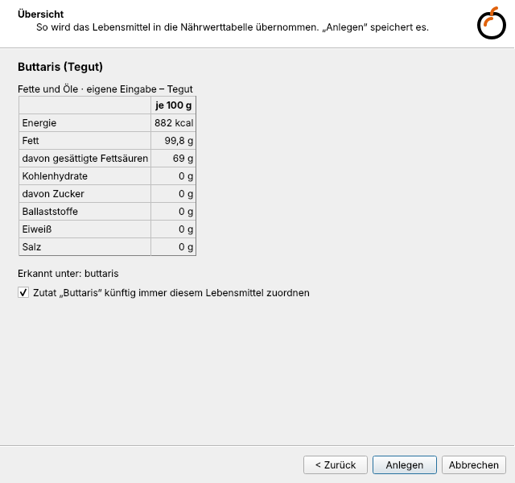
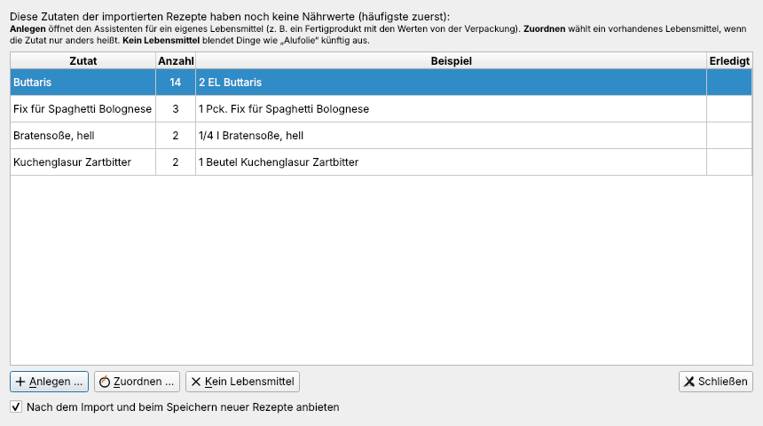
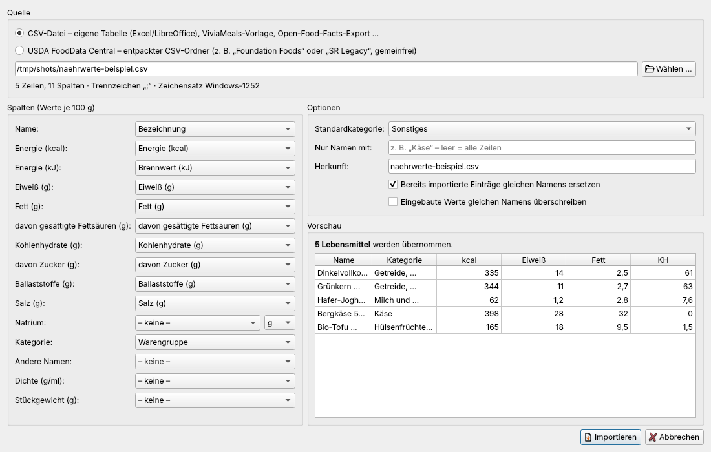
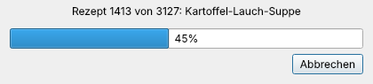

Nährwerte
Wie ViviaMeals rechnet
Für jede Zutat sucht ViviaMeals das passende Lebensmittel in seiner Nährwerttabelle und rechnet die Menge in Gramm um:
- Gewicht direkt (g, kg, oz, lb),
- Volumen über die Dichte des Lebensmittels (ml, l, EL, TL, Tasse, cup),
- Stück, Zehe, Dose, Packung über typische Stückgewichte,
- Angaben in Klammern wie „1 Süßkartoffel (ca. 400 g)“ vor allem anderen.
Daraus entstehen Energie (kcal und kJ), Fett, gesättigte Fettsäuren, Kohlenhydrate, Zucker, Ballaststoffe, Eiweiß und Salz – für das ganze Rezept, je Portion und in Prozent der Referenzmenge für einen durchschnittlichen Erwachsenen (8.400 kJ / 2.000 kcal nach der Lebensmittel-Informationsverordnung). Das Ergebnis wird im Rezept gespeichert.
Die Werte sind Richtwerte aus allgemeinen Tabellen. Sorte, Reife, Marke und Zubereitung können sie deutlich verändern. Rezepte, bei denen weniger als 80 % der Zutaten Nährwerte haben, erhalten keine Nährwert-Tags.
Die Nährwerttabelle
Eingebaut sind rund 220 Lebensmittelgruppen mit Werten je 100 g, Dichte, Stückgewichten und vielen deutschen und englischen Namen. Namen werden unabhängig von Umlauten und Akzenten verglichen („Gemuesebruehe“ = „Gemüsebrühe“, „Gruyere“ = „Gruyère“); zusammengesetzte Wörter wie „Zanderfilets“ oder „Hasenrücken“ werden erkannt.
Extras → Nährwerttabelle … zeigt alle Lebensmittel. Hier können Sie eigene Lebensmittel anlegen, eingebaute Werte überschreiben und Werte importieren oder exportieren.
Eigene Lebensmittel anlegen
Fertigprodukte und Markenartikel („Fix für Spaghetti Bolognese“, eine bestimmte Bratensoße) stehen in keiner allgemeinen Tabelle. Mit dem Lebensmittel-Assistenten übertragen Sie die Angaben von der Verpackung.
Aufruf: Extras → Eigenes Lebensmittel anlegen …, im Editor Fehlende Lebensmittel anlegen … – oder automatisch nach einem Import bzw. beim Speichern eines neuen Rezepts, wenn Zutaten ohne Nährwerte übrig bleiben (in den Einstellungen abschaltbar).

- Bezeichnung: Name, Marke (optional), Kategorie und weitere Namen, unter denen die Zutat in Rezepten vorkommt.
- Open Food Facts: Barcode (EAN-13, EAN-8, UPC) eintippen und Abrufen – ein USB-Barcode-Scanner tippt die Ziffern selbst. Oder Nach Namen suchen …. Übernommen werden Name, Marke, Kategorie, Nährwerte und Packungsinhalt. Gesendet wird nur der Barcode bzw. Suchbegriff.
- Heißt die Zutat nur anders als ein vorhandenes Lebensmittel („Pflanzenfett“ → Margarine), besser Doch ein vorhandenes Lebensmittel zuordnen … wählen.
- Nährwerte: Angaben je 100 g, je 100 ml oder je Portion; Energie in kcal oder kJ; Natrium statt Salz ankreuzbar. Eine Prüfung warnt bei unmöglichen Werten (Zucker größer als Kohlenhydrate) und wenn die Energie nicht zu den Nährstoffen passt – meist wurden dann kJ als kcal eingetragen.
- Menge und Packung: Dichte (für EL, TL und ml), Packungsinhalt mit Einheit (Pck., Becher, Dose, Würfel …) und Stückgewicht. So wird aus „1 Pck. Fix für Bolognese“ richtig 40 g.
- Übersicht: Werte je 100 g und je Packung; „Zutat … künftig immer diesem Lebensmittel zuordnen“.

Zutaten ohne Nährwerte
Extras → Zutaten ohne Nährwerte … listet alle Zutaten der Datenbank, für die kein Lebensmittel gefunden wurde – mit Häufigkeit und einer Beispielzeile.

- Anlegen (oder Doppelklick) öffnet den Lebensmittel-Assistenten.
- Zuordnen verknüpft die Zutat mit einem vorhandenen Lebensmittel.
- Kein Lebensmittel blendet Einträge wie „Backpapier“ oder „Alufolie“ dauerhaft aus.
Danach werden die Nährwerte der betroffenen Rezepte neu berechnet.
Nährwerte importieren und exportieren
Extras → Nährwerttabelle → Importieren / Exportieren übernimmt viele Werte auf einmal:
- eigene Tabellen aus Excel oder LibreOffice Calc und die mitgelieferte CSV-Vorlage,
- Exporte von Open Food Facts,
- den entpackten CSV-Ordner von USDA FoodData Central (gemeinfrei).
Trennzeichen, Zeichensatz, Dezimalkomma, „<0,1“ sowie kJ und Natrium werden erkannt bzw. umgerechnet; die Spalten ordnet ViviaMeals anhand der Überschriften zu (änderbar, mit Vorschau). Jeder Import erhält eine Herkunft und lässt sich später gesammelt wieder entfernen.

Mahlzeit- und Nährwert-Tags
ViviaMeals vergibt beim Import, im Editor über Ergänzen und für alle Rezepte über Extras → Mahlzeit- und Nährwert-Tags für alle Rezepte ergänzen … Tags, die der Wochenplan und die Suche nutzen.
Mahlzeit-Tags – aus Kategorien, Titel, Zutaten und Nährwerten geschätzt: frühstück, hauptgerichte, leichte mahlzeit, zwischenmahlzeit, desserts, süßspeise, backen.
Nährwert-Tags – aus den berechneten Werten:
| Tag | Bedingung |
|---|---|
| eiweißreich | mind. 20 % der Energie aus Eiweiß und mind. 15 g Eiweiß je Portion |
| fettarm | höchstens 3 g Fett je 100 g |
| kalorienarm | höchstens 80 kcal je 100 g und höchstens 400 kcal je Portion |
| hochkalorisch | mind. 250 kcal je 100 g oder mind. 800 kcal je Portion |
| vitaminreich | mind. 200 g Gemüse, Obst und Kräuter je Portion oder mind. die Hälfte des Portionsgewichts |
| reduktionsdiät | höchstens 600 kcal je Portion und 150 kcal je 100 g, höchstens 35 % Energie aus Fett und 20 % aus Zucker, mind. 15 % aus Eiweiß, kein Dessert |
„eiweißreich“ und „fettarm“ folgen den Grenzwerten der EU-Verordnung über nährwertbezogene Angaben; „vitaminreich“ ist ein Näherungswert, denn die Tabelle enthält keine Vitamine. Tags werden nur ergänzt, nie entfernt – mit einer Ausnahme: Nährwert-Tags, die nach einer Änderung der Zutaten nicht mehr zutreffen, entfallen beim Neuberechnen.
Saison-Tags
Frische Zutaten haben in Deutschland ihre Saison – Spargel im Frühling, Erdbeeren im Sommer, Kürbis im Herbst, Grünkohl im Winter. ViviaMeals vergibt danach die Tags frühling, sommer, herbst, winter oder ganzjährig: beim Import (abschaltbar unter Einstellungen → Import), im Editor über Ergänzen und nachträglich für die ganze Datenbank über Extras → Saison-Tags für alle Rezepte vergeben … (mit Vorschau und Rückfrage).
So wird gerechnet:
- Grundlage ist ein Saisonkalender für regionale Ware (Freiland bzw. Lager) nach Monaten, etwa Spargel April–Juni, Erdbeeren Mai–August, Tomaten Juli–Oktober, Kürbis August–Dezember, Feldsalat Oktober–März, Grünkohl November–Februar. Auch Wild (Oktober–Januar) und Gans (November–Dezember) haben eine Saison.
- Ein Monat passt zum Rezept, wenn mindestens 80 % des Gewichts der Saisonzutaten dann Saison haben – ein Bund Frühlingszwiebeln macht aus einem Grünkohlgericht also kein Sommeressen.
- Eine Jahreszeit (Frühling März–Mai, Sommer Juni–August, Herbst September–November, Winter Dezember–Februar) wird vergeben, wenn mindestens zwei ihrer Monate passen.
- ganzjährig bekommen Rezepte, deren frische Zutaten es immer gibt (Kartoffeln, Zwiebeln, Möhren, Kohl und Äpfel vom Lager, Champignons, Bananen …) und die einen nennenswerten Anteil frischer Zutaten haben.
- Nicht gezählt werden Tiefkühlware, Konserven, Getrocknetes, Säfte, Mus, Pulver und Ähnliches – „Erbsen (TK)“ oder „Tomaten aus der Dose“ gibt es das ganze Jahr.
Die Themenauswahl Saisonal im Hauptfenster zeigt automatisch die Rezepte der aktuellen Jahreszeit (Die Rezeptliste).
Anders als die übrigen Tags werden Saison-Tags dabei ersetzt: Ändern Sie die Zutaten, passt ViviaMeals die Jahreszeit an. Andere Tags bleiben unberührt.
Alles neu berechnen
Extras → Nährwerte aller Rezepte neu berechnen wendet die aktuelle Nährwerttabelle auf alle Rezepte an – etwa nachdem Sie eigene Lebensmittel angelegt haben. Ein Fortschrittsbalken zeigt den Stand; beim Abbrechen bleiben die schon berechneten Rezepte gespeichert.
